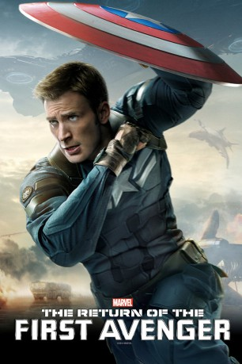

Alternativ: Captain America: The Winter Soldier
Auszeichnungen: für 1 Oscars nominiert
 
 IMDB-Wertung: 7.8 / 10
IMDB-Wertung: 7.8 / 10  Metascore:
Metascore: 
Nach den Geschehnissen mit den Avengers in New York zieht sich Steve Rogers nach Washington zurück. Dort hat er nach wie vor Probleme, sich an das moderne Leben zu gewöhnen. Doch er wird wieder in den Einsatz berufen, als ein S.H.I.E.L.D.-Agent Ziel eines Angriffs wird. Dies ist nur der Beginn eines größeren Plans, der die ganze Welt in Gefahr bringen könnte. Steve kehrt als Captain America zurück und versucht mit Hilfe von Agentin Romanoff, auch bekannt als Black Widow, die Verschwörung aufzuklären. Die Beiden erhalten zusätzliche Unterstützung vom Falken. Die Mission birgt einige Gefahren und die beiden werden oftmals Ziel von Attentaten. Doch die größte Gefahr ist der Gegner selbst: der Winter Soldier.
Jahr: 2014
Dauer: 136 Minuten
FSK: 12
Land: USA Studio: Walt Disney Studios Motion PicturesTonspuren: DTS - ,
Untertitel:
Auflösung: 1080p (1920x1080) Größe: 12390 MB
Genre: Action, Abenteuer, Sci-Fi, Thriller
Regisseur: Anthony Russo, Joe Russo
Drehbuch: Christopher Markus, Stephen McFeely, Joe Simon, Jack Kirby, Gene Colan
Soundtrack: Henry Jackman
Darsteller:
Datei: X:\Comic-Filme\Captain America\Captain America 2 - The Return of the First Avenger (2014, FSK12, 1920x1080) 3D.mkv seit 29.05.2015
Festplatte: Comicverfilmungen+MusikCD
 Es gibt insgesamt 10 Filme in der Gruppe 'Comic-Filme\Captain America'
Es gibt insgesamt 10 Filme in der Gruppe 'Comic-Filme\Captain America'